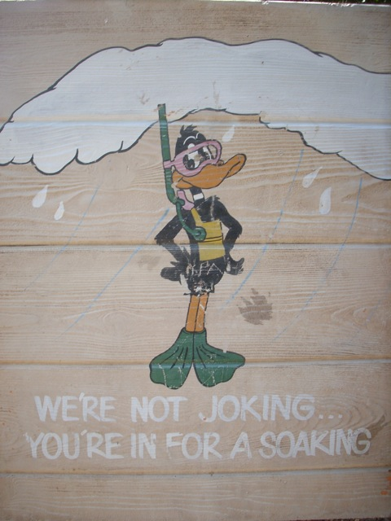
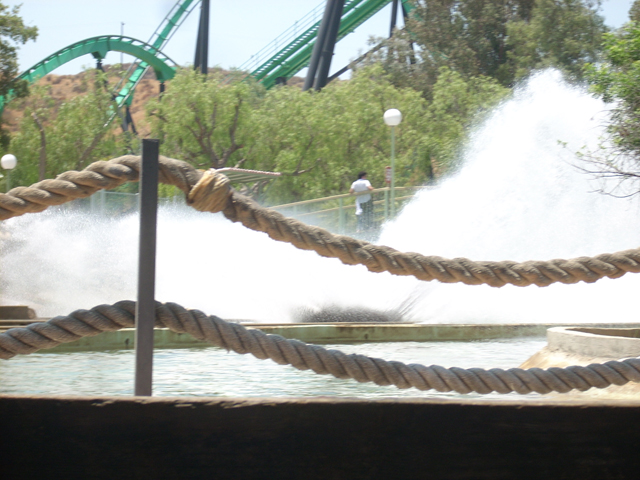

Six Flags Magic Mtn Summer 2008
Ok, we're here at Six Flags Magic Mountain because we can't get enough FIRE!!!! Anywaysm here we are at Log Jammer,
 Ok. Thats enough Water Ride Randomness. We need some coaster shots since we are "Incrediblecoasters." Anyways, here's Goliath. (It was running well today.)
Ok. Thats enough Water Ride Randomness. We need some coaster shots since we are "Incrediblecoasters." Anyways, here's Goliath. (It was running well today.)
After Goliath, We rode Scream. (You don't see Scream from this angle often.)
Ok, that's enough coasters for now. Let's get back to our Water Ride Randomness.

Bulls**t.
Oh Crap! It's a schoolkid invasion!

Ok, I take that back. They really wern't joking. We're in for a soaking. (The back row gets a nice little suprise.)
It's Riddlers Time!
Riddlers was running nice today. Lots of G Forces.
 Good News. DejaVu's Single Riders line was open, and it didn't murder my new cell phone! So it's not a cell phone murdering single rider hating bitch, which means everything is back to normal! (Or is it?)
Good News. DejaVu's Single Riders line was open, and it didn't murder my new cell phone! So it's not a cell phone murdering single rider hating bitch, which means everything is back to normal! (Or is it?)
There's something diffrent about Revolution.
Yep. That's right. Revolution got new trains. They look really nice. And while they do make the ride look better, the ride still sucks.
 Ok, we came here to get fire, and now it's time for some fire!
Ok, we came here to get fire, and now it's time for some fire!
 Why would you ride the carousel when you have the Stomach Flu?
Why would you ride the carousel when you have the Stomach Flu?
Ok, this is really sad. X2 has been open for about a month and look at the Gum Support it's developed!
 Here's X2's crazy first drop!!! 3 rides on X2 was simply awsome.
Here's X2's crazy first drop!!! 3 rides on X2 was simply awsome.
Wow. What's wrong with this sign? Email me and the first person to get it right will recieve over a million martian dollars!!!
Home